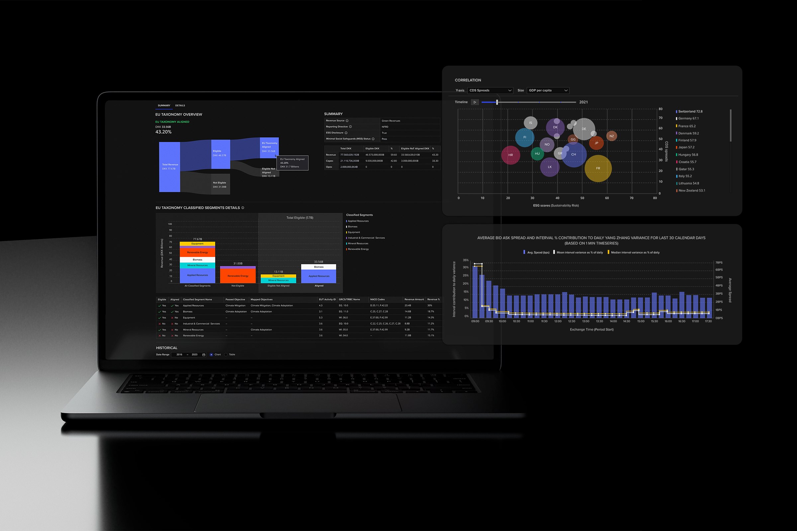

Back

As product designer at LSEG I worked on multiple applications within Workspace such as Beyond Ratings, Codebook, ETF Screener, and Securities Data Company (SDC) Platinum. Introducing new features and user improvements that support organisational objectives and enhances workflows for LSEG Workspace customers to facilitate efficient and user-friendly management of large data sets.
I led and delivered applications (end-to-end) for sustainable finance, notably launching Green Revenues and EU Taxonomy for Workspace. Instrumental in conceptualising and refining propositions to deliver intuitive user experiences.
FTSE Russell Green Revenues
The FTSE Russell Green Revenues Data Model provides investors with a highly granular and flexible dataset circa 20,000 public equities for revenue exposure to the green economy. It identifies any company with revenues derived from green products and services and classifies the "greenness" of those goods based on the FTSE Russell Green Revenues Classification System (GRCS).
Challenges
Green Revenues souce data are only available on the FTSE Russell website in tabular format, and needed to be moved over into Workspace.